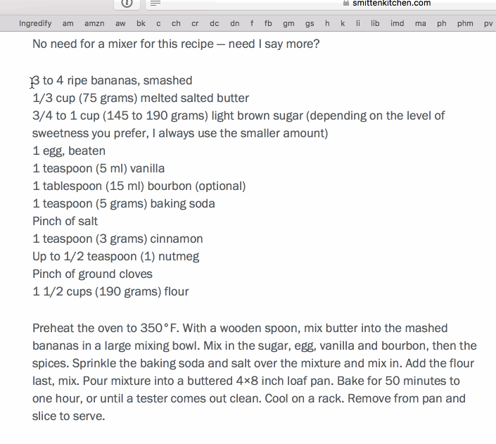

Drag this link to your bookmarks bar:
Ingredify
When you're on a recipe page, highlight the ingredients
Click the bookmarklet and you'll be able to hover over ingredients on the page to reference their amounts
Like so:
